消息队列概述 消息队列MQ MQ全称为Message Queue，消息队列是应用程序和应用程序之间的通信方法。
为什么使用MQ
1 在项目中，可将一些无需即时返回且耗时的操作提取出来，进行异步处理，而这种异步处理的方式大大的节省了服务器的请求响应时间，从而提高了系统的吞吐量。
开发中消息队列通常有如下应用场景：
1 2 3 4 5 1、任务异步处理 将不需要同步处理的并且耗时长的操作由消息队列通知消息接收方进行异步处理。提高了应用程序的响应时间。 2、应用程序解耦合 MQ相当于一个中介，生产方通过MQ与消费方交互，它将应用程序进行解耦合。
AMQP 和 JMS MQ是消息通信的模型；实现MQ的大致有两种主流方式：AMQP、JMS。
AMQP AMQP高级消息队列协议，是一个进程间传递异步消息的网络协议，更准确的说是一种binary wire-level protocol（链接协议）。这是其和JMS的本质差别，AMQP不从API层进行限定，而是直接定义网络交换的数据格式。
JMS JMS即Java消息服务（JavaMessage Service）应用程序接口，是一个Java平台中关于面向消息中间件（MOM）的API，用于在两个应用程序之间，或分布式系统中发送消息，进行异步通信。
AMQP 与 JMS 区别
JMS是定义了统一的接口，来对消息操作进行统一；AMQP是通过规定协议来统一数据交互的格式
JMS限定了必须使用Java语言；AMQP只是协议，不规定实现方式，因此是跨语言的。
JMS规定了两种消息模式；而AMQP的消息模式更加丰富
消息队列产品 市场上常见的消息队列有如下：
目前市面上成熟主流的MQ有Kafka 、RocketMQ、RabbitMQ，我们这里对每款MQ做一个简单介绍。
Kafka
1 2 3 4 5 6 Apache下的一个子项目，使用scala实现的一个高性能分布式Publish/Subscribe消息队列系统。 1.快速持久化：通过磁盘顺序读写与零拷贝机制，可以在O(1)的系统开销下进行消息持久化； 2.高吞吐：在一台普通的服务器上既可以达到10W/s的吞吐速率； 3.高堆积：支持topic下消费者较长时间离线，消息堆积量大； 4.完全的分布式系统：Broker、Producer、Consumer都原生自动支持分布式，依赖zookeeper自动实现复杂均衡； 5.支持Hadoop数据并行加载：对于像Hadoop的一样的日志数据和离线分析系统，但又要求实时处理的限制，这是一个可行的解决方案。
RocketMQ
1 2 3 4 5 6 7 RocketMQ的前身是Metaq，当Metaq3.0发布时，产品名称改为RocketMQ。RocketMQ是一款分布式、队列模型的消息中间件，具有以下特点 ： 1.能够保证严格的消息顺序 2.提供丰富的消息拉取模式 3.高效的订阅者水平扩展能力 4.实时的消息订阅机制 5.支持事务消息 6.亿级消息堆积能力
RabbitMQ
1 使用Erlang编写的一个开源的消息队列，本身支持很多的协议：AMQP，XMPP, SMTP,STOMP，也正是如此，使的它变的非常重量级，更适合于企业级的开发。同时实现了Broker架构，核心思想是生产者不会将消息直接发送给队列，消息在发送给客户端时先在中心队列排队。对路由(Routing)，负载均衡(Load balance)、数据持久化都有很好的支持。多用于进行企业级的ESB整合。
RabbitMQ RabbitMQ是由erlang语言开发，基于AMQP（Advanced Message Queue 高级消息队列协议）协议实现的消息队列，它是一种应用程序之间的通信方法，消息队列在分布式系统开发中应用非常广泛。
RabbitMQ官方地址：http://www.rabbitmq.com/
RabbitMQ提供了6种模式：简单模式，work模式，Publish/Subscribe发布与订阅模式，Routing路由模式，Topics主题模式，RPC远程调用模式（远程调用，不太算MQ；不作介绍）；
官网对应模式介绍：https://www.rabbitmq.com/getstarted.html
用户以及Virtual Hosts配置 用户角色 RabbitMQ在安装好后，可以访问http://localhost:15672 ；其自带了guest/guest的用户名和密码；如果需要创建自定义用户；那么也可以登录管理界面后，如下操作：
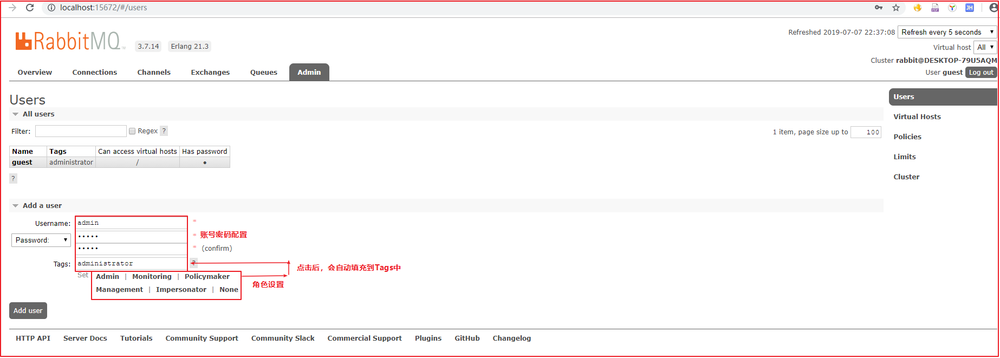
角色说明 ：
1、 超级管理员(administrator)
可登陆管理控制台，可查看所有的信息，并且可以对用户，策略(policy)进行操作。
2、 监控者(monitoring)
可登陆管理控制台，同时可以查看rabbitmq节点的相关信息(进程数，内存使用情况，磁盘使用情况等)
3、 策略制定者(policymaker)
可登陆管理控制台, 同时可以对policy进行管理。但无法查看节点的相关信息(上图红框标识的部分)。
4、 普通管理者(management)
仅可登陆管理控制台，无法看到节点信息，也无法对策略进行管理。
5、 其他
无法登陆管理控制台，通常就是普通的生产者和消费者。
Virtual Hosts配置 像mysql拥有数据库的概念并且可以指定用户对库和表等操作的权限。RabbitMQ也有类似的权限管理；在RabbitMQ中可以虚拟消息服务器Virtual Host，每个Virtual Hosts相当于一个相对独立的RabbitMQ服务器，每个VirtualHost之间是相互隔离的。exchange、queue、message不能互通。 相当于mysql的db。Virtual Name一般以/开头。
(1)创建Virtual Hosts
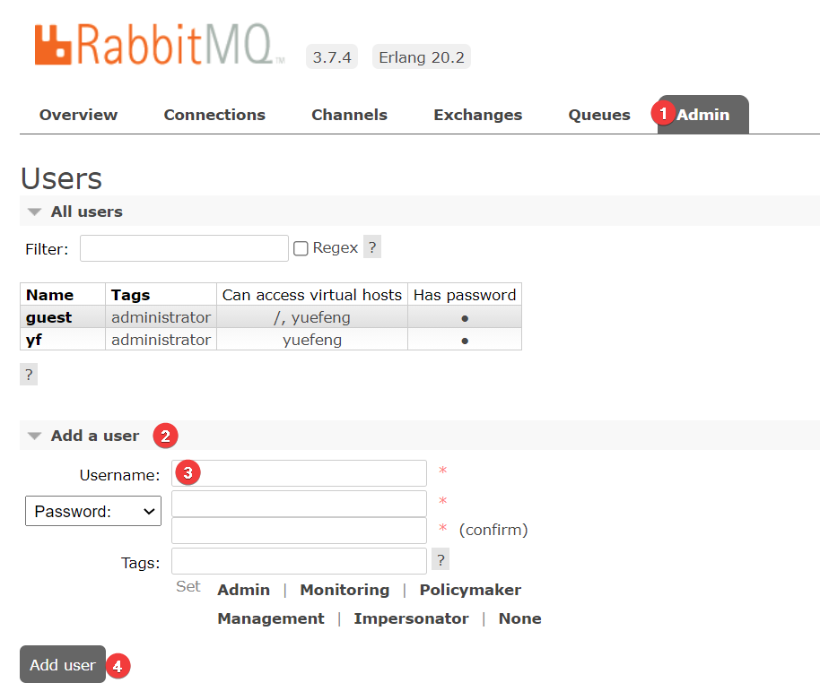
(2)设置Virtual Hosts权限
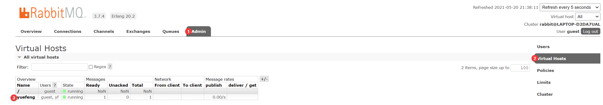
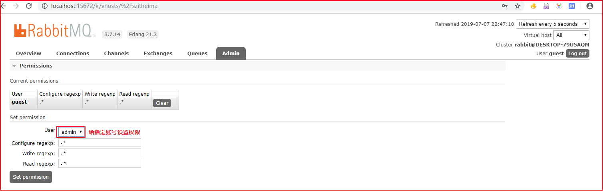
参数说明：
1 2 3 4 user：用户名 configure ：一个正则表达式，用户对符合该正则表达式的所有资源拥有 configure 操作的权限 write：一个正则表达式，用户对符合该正则表达式的所有资源拥有 write 操作的权限 read：一个正则表达式，用户对符合该正则表达式的所有资源拥有 read 操作的权限
RabbitMQ入门 入门案例将使用RabbitMQ的简单模式实现。
搭建示例工程 创建工程 工程坐标如下：
1 2 3 <groupId > com.itheima</groupId > <artifactId > rabbitmq-demo</artifactId > <version > 1.0-SNAPSHOT</version >
添加依赖 往heima-rabbitmq的pom.xml文件中添加如下依赖：
1 2 3 4 5 <dependency > <groupId > com.rabbitmq</groupId > <artifactId > amqp-client</artifactId > <version > 5.6.0</version > </dependency >
生产者 生产者的创建分为如下几个步骤：
1 2 3 4 5 6 7 8 9 10 11 12 //创建链接工厂对象 //设置RabbitMQ服务主机地址,默认localhost //设置RabbitMQ服务端口,默认5672 //设置虚拟主机名字，默认/ //设置用户连接名，默认guest //设置链接密码，默认guest //创建链接 //创建频道 //声明队列 //创建消息 //消息发送 //关闭资源
按照上面的步骤，我们创建一个消息生产者，创建com.itheima.rabbitmq.simple.Producer类，代码如下：
1 2 3 4 5 6 7 8 9 10 11 12 13 14 15 16 17 18 19 20 21 22 23 24 25 26 27 28 29 30 31 32 33 34 35 36 37 38 39 40 41 42 43 44 45 46 47 48 49 50 51 52 53 54 55 56 57 58 59 60 public class Producer public static void main (String[] args) throws IOException, TimeoutException ConnectionFactory connectionFactory = new ConnectionFactory(); connectionFactory.setHost("localhost" ); connectionFactory.setPort(5672 ); connectionFactory.setVirtualHost("/szitheima" ); connectionFactory.setUsername("admin" ); connectionFactory.setPassword("admin" ); Connection connection = connectionFactory.newConnection(); Channel channel = connection.createChannel(); channel.queueDeclare("simple_queue" ,true ,false ,false ,null ); String message = "hello i from producer" ; channel.basicPublish("" ,"simple_queue" ,null ,message.getBytes()); channel.close(); connection.close(); } }
在执行上述的消息发送之后；可以登录rabbitMQ的管理控制台，可以发现队列和其消息：
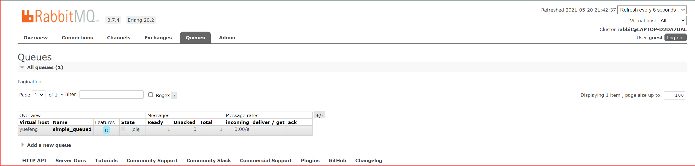
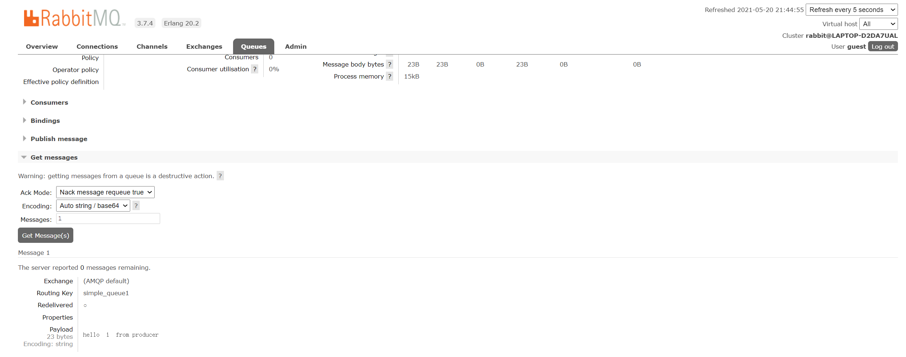
消费者 消费者创建可以按照如下步骤实现：
1 2 3 4 5 6 7 8 9 10 11 12 //创建链接工厂对象 //设置RabbitMQ服务主机地址,默认localhost //设置RabbitMQ服务端口,默认5672 //设置虚拟主机名字，默认/ //设置用户连接名，默认guest //设置链接密码，默认guest //创建链接 //创建频道 //创建队列 //创建消费者，并设置消息处理 //消息监听 //关闭资源(不建议关闭，建议一直监听消息)
按照上面的步骤创建消息消费者com.itheima.rabbitmq.simple.Consumer代码如下：
1 2 3 4 5 6 7 8 9 10 11 12 13 14 15 16 17 18 19 20 21 22 23 24 25 26 27 28 29 30 31 32 33 34 35 36 37 38 39 40 41 42 43 44 45 46 47 48 49 50 51 52 53 54 55 56 57 58 59 60 61 62 63 64 65 66 67 68 69 70 71 public class Consumer public static void main (String[] args) throws Exception ConnectionFactory connectionFactory = new ConnectionFactory(); connectionFactory.setHost("localhost" ); connectionFactory.setPort(5672 ); connectionFactory.setVirtualHost("yuefeng" ); connectionFactory.setUsername("yf" ); connectionFactory.setPassword("yf" ); Connection connection = connectionFactory.newConnection(); Channel channel = connection.createChannel(); channel.queueDeclare("simple_queue1" ,true ,false ,false ,null ); DefaultConsumer defaultConsumer = new DefaultConsumer(channel){ @Override public void handleDelivery (String consumerTag, Envelope envelope, AMQP.BasicProperties properties, byte [] body) throws IOException String routingKey = envelope.getRoutingKey(); String exchange = envelope.getExchange(); long deliveryTag = envelope.getDeliveryTag(); String message = new String(body,"UTF-8" ); System.out.println("routingKey:" +routingKey+",exchange:" +exchange+",deliveryTag:" +deliveryTag+",message:" +message); } }; channel.basicConsume("simple_queue1" ,true ,defaultConsumer); }
执行后，控制台输入如下：
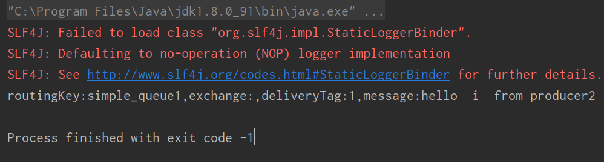
RabbitMQ控制台如下：
工具抽取 (1)工具类抽取
无论是消费者，还是生产者，我们发现前面的几个步骤几乎一模一样，所以可以抽取一个工具类,将下面这段代码抽取出去。
创建com.itheima.rabbitmq.util.ConnectionUtil工具类对象，用于创建Connection，代码如下：
1 2 3 4 5 6 7 8 9 10 11 12 13 14 15 16 17 18 19 20 21 22 23 24 25 26 27 28 29 30 31 32 public class ConnectionUtil public static Connection getConnection () throws IOException, TimeoutException ConnectionFactory connectionFactory = new ConnectionFactory(); connectionFactory.setHost("localhost" ); connectionFactory.setPort(5672 ); connectionFactory.setVirtualHost("/szitheima" ); connectionFactory.setUsername("admin" ); connectionFactory.setPassword("admin" ); Connection connection = connectionFactory.newConnection(); return connection; } }
(2)生产者优化
修改com.itheima.rabbitmq.simple.Producer，链接对象使用上面的ConnectionUtil工具类创建，代码如下：
1 2 Connection connection = ConnectionUtil.getConnection();
(3)消费者优化
修改com.itheima.rabbitmq.simple.Consumer，链接对象使用上面的ConnectionUtil工具类创建，代码如下：
1 2 Connection connection = ConnectionUtil.getConnection();
小结 上述的入门案例中中其实使用的是如下的简单模式：
在上图的模型中，有以下概念：
1 2 3 P：生产者，也就是要发送消息的程序 C：消费者：消息的接受者，会一直等待消息到来。 queue：消息队列，图中红色部分。类似一个邮箱，可以缓存消息；生产者向其中投递消息，消费者从其中取出消息。
在rabbitMQ中消息者是一定要到某个消息队列中去获取消息的
RabbitMQ工作模式 Work queues工作队列模式 模式说明 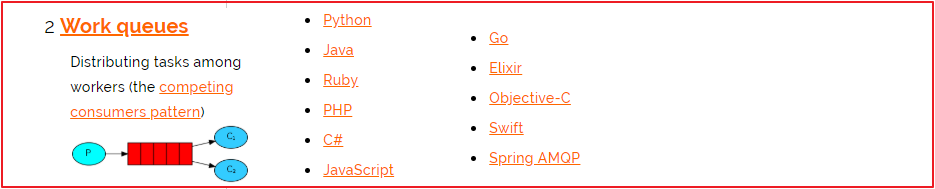
Work Queues与入门程序的简单模式相比，多了一个或一些消费端，多个消费端共同消费同一个队列中的消息。
应用场景 ：对于 任务过重或任务较多情况使用工作队列可以提高任务处理的速度。
代码 Work Queues与入门程序的简单模式的代码是几乎一样的；可以完全复制，并复制多一个消费者进行多个消费者同时消费消息的测试。
(1)生产者
创建com.itheima.rabbitmq.work.WorkProducer消息生产者对象，代码如下：
1 2 3 4 5 6 7 8 9 10 11 12 13 14 15 16 17 18 19 20 21 22 23 24 25 26 27 28 29 30 31 package com.yuefeng.work;import com.rabbitmq.client.Channel;import com.rabbitmq.client.Connection;import com.yuefeng.util.ConnectionUtil;public class WorkProducer public static void main (String[] args) throws Exception Connection connection = ConnectionUtil.getConnection(); Channel channel = connection.createChannel(); channel.queueDeclare("work_queue1" , true , false , false , null ); for (int i = 0 ; i < 20 ; i++) { String message = "hello i from work " +i; channel.basicPublish("" ,"work_queue1" ,null ,message.getBytes()); } channel.close(); connection.close(); } }
(2)消费者One
创建第1个Work消费者com.itheima.rabbitmq.work.WorkConsumerOne,代码如下：
1 2 3 4 5 6 7 8 9 10 11 12 13 14 15 16 17 18 19 20 21 22 23 24 25 26 27 28 29 30 31 32 33 34 35 36 37 38 39 40 41 42 43 44 45 46 47 48 49 50 51 52 53 54 55 56 57 58 59 package com.yuefeng.work;import com.rabbitmq.client.*;import com.yuefeng.util.ConnectionUtil;import java.io.IOException;public class WorkConsumer1 public static void main (String[] args) throws Exception Connection connection = ConnectionUtil.getConnection(); Channel channel = connection.createChannel(); channel.queueDeclare("work_queue1" ,true ,false ,false ,null ); DefaultConsumer defaultConsumer = new DefaultConsumer(channel){ @Override public void handleDelivery (String consumerTag, Envelope envelope, AMQP.BasicProperties properties, byte [] body) throws IOException String routingKey = envelope.getRoutingKey(); String exchange = envelope.getExchange(); long deliveryTag = envelope.getDeliveryTag(); String message = new String(body,"UTF-8" ); System.out.println("111111111111111111111111111" ); System.out.println("routingKey:" +routingKey+",exchange:" +exchange+",deliveryTag:" +deliveryTag+",message:" +message); } }; channel.basicConsume("work_queue1" ,true ,defaultConsumer); } }
(3)消费者Two
创建第2个Work消费者com.itheima.rabbitmq.work.WorkConsumerTwo，代码如下：
1 2 3 4 5 6 7 8 9 10 11 12 13 14 15 16 17 18 19 20 21 22 23 24 25 26 27 28 29 30 31 32 33 34 35 36 37 38 39 40 41 42 43 44 45 46 47 48 49 50 51 52 53 54 55 56 57 58 59 package com.yuefeng.work;import com.rabbitmq.client.*;import com.yuefeng.util.ConnectionUtil;import java.io.IOException;public class WorkConsumer2 public static void main (String[] args) throws Exception Connection connection = ConnectionUtil.getConnection(); Channel channel = connection.createChannel(); channel.queueDeclare("work_queue1" ,true ,false ,false ,null ); DefaultConsumer defaultConsumer = new DefaultConsumer(channel){ @Override public void handleDelivery (String consumerTag, Envelope envelope, AMQP.BasicProperties properties, byte [] body) throws IOException String routingKey = envelope.getRoutingKey(); String exchange = envelope.getExchange(); long deliveryTag = envelope.getDeliveryTag(); String message = new String(body,"UTF-8" ); System.out.println("2222222222222222222222222222" ); System.out.println("routingKey:" +routingKey+",exchange:" +exchange+",deliveryTag:" +deliveryTag+",message:" +message); } }; channel.basicConsume("work_queue1" ,true ,defaultConsumer); } }
测试 启动两个消费者，然后再启动生产者发送消息；到IDEA的两个消费者对应的控制台查看是否竞争性的接收到消息。
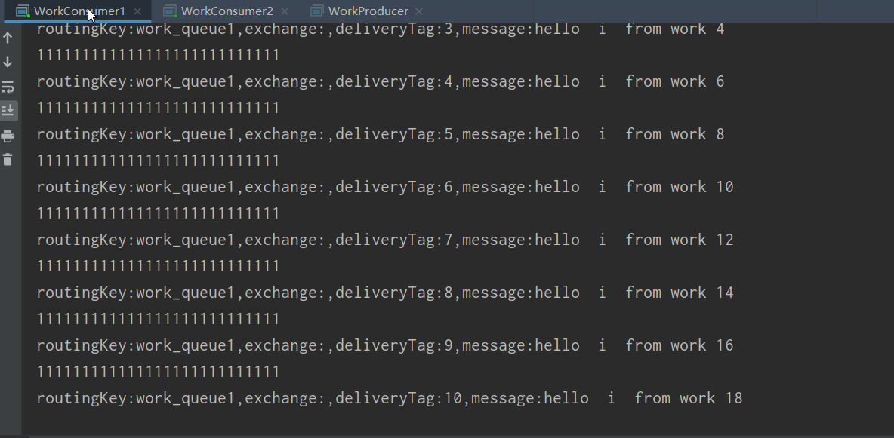
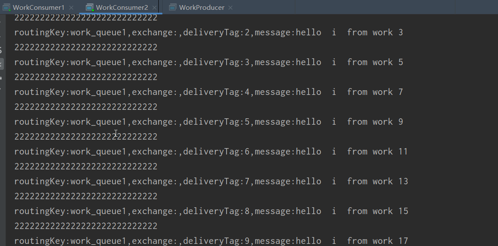
订阅模式类型 订阅模式示例图：
前面2个案例中，只有3个角色：
1 2 3 P：生产者，也就是要发送消息的程序 C：消费者：消息的接受者，会一直等待消息到来。 Queue：消息队列，图中红色部分
而在订阅模型中，多了一个exchange角色，而且过程略有变化：
1 2 3 4 5 6 7 P：生产者，也就是要发送消息的程序，但是不再发送到队列中，而是发给X（交换机） C：消费者，消息的接受者，会一直等待消息到来。 Queue：消息队列，接收消息、缓存消息。 Exchange：交换机，图中的X。一方面，接收生产者发送的消息。另一方面，知道如何处理消息，例如递交给某个特别队列、递交给所有队列、或是将消息丢弃。到底如何操作，取决于Exchange的类型。Exchange有常见以下3种类型： Fanout：广播，将消息交给所有绑定到交换机的队列 Direct：定向，把消息交给符合指定routing key 的队列 Topic：通配符，把消息交给符合routing pattern（路由模式） 的队列
Exchange（交换机）只负责转发消息，不具备存储消息的能力 ，因此如果没有任何队列与Exchange绑定，或者没有符合路由规则的队列，那么消息会丢失！
Publish/Subscribe发布与订阅模式 模式说明 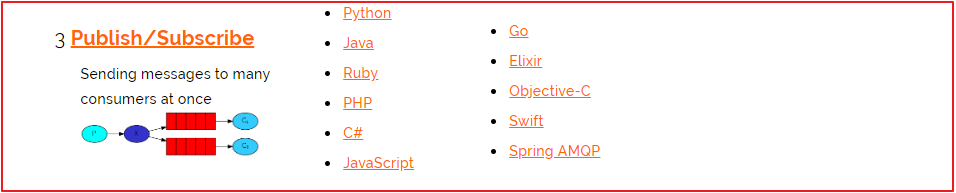
发布订阅模式：
1 2 3 1.每个消费者监听自己的队列。 2.生产者将消息发给broker，由交换机将消息转发到绑定此交换机的每个队列，每个绑定交换机的队列都将接收 到消息
代码 (1)生产者
生产者需要注意如下3点：
1 2 3 1.声明交换机 2.声明队列 3.队列需要绑定指定的交换机
创建com.itheima.rabbitmq.ps.PublishSubscribeProducer消息生产者，代码如下：
1 2 3 4 5 6 7 8 9 10 11 12 13 14 15 16 17 18 19 20 21 22 23 24 25 26 27 28 29 30 31 32 33 34 35 36 37 package com.yuefeng.fanout;import com.rabbitmq.client.BuiltinExchangeType;import com.rabbitmq.client.Channel;import com.rabbitmq.client.Connection;import com.yuefeng.util.ConnectionUtil;public class Producer public static void main (String[] args) throws Exception Connection connection = ConnectionUtil.getConnection(); Channel channel = connection.createChannel(); channel.queueDeclare("fanout_queue1" , true , false , false , null ); channel.queueDeclare("fanout_queue2" , true , false , false , null ); channel.exchangeDeclare("fanout_exchange" , BuiltinExchangeType.FANOUT); channel.queueBind("fanout_queue1" , "fanout_exchange" , "" ); channel.queueBind("fanout_queue2" , "fanout_exchange" , "" ); String message = "hello i from fanout " ; channel.basicPublish("fanout_exchange" ,"" ,null ,message.getBytes()); channel.close(); connection.close(); } }
(2)消费者One
创建com.itheima.rabbitmq.ps.PublishSubscribeConsumerOne消息消费对象，代码如下：
1 2 3 4 5 6 7 8 9 10 11 12 13 14 15 16 17 18 19 20 21 22 23 24 25 26 27 28 29 30 31 32 33 34 35 36 37 38 39 40 41 42 43 44 45 46 47 48 49 50 51 52 53 54 55 56 57 58 59 package com.yuefeng.fanout;import com.rabbitmq.client.*;import com.yuefeng.util.ConnectionUtil;import java.io.IOException;public class Consumer1 public static void main (String[] args) throws Exception Connection connection = ConnectionUtil.getConnection(); Channel channel = connection.createChannel(); channel.queueDeclare("fanout_queue1" ,true ,false ,false ,null ); DefaultConsumer defaultConsumer = new DefaultConsumer(channel){ @Override public void handleDelivery (String consumerTag, Envelope envelope, AMQP.BasicProperties properties, byte [] body) throws IOException String routingKey = envelope.getRoutingKey(); String exchange = envelope.getExchange(); long deliveryTag = envelope.getDeliveryTag(); String message = new String(body,"UTF-8" ); System.out.println("111111111111111111111111111" ); System.out.println("routingKey:" +routingKey+",exchange:" +exchange+",deliveryTag:" +deliveryTag+",message:" +message); } }; channel.basicConsume("fanout_queue1" ,true ,defaultConsumer); } }
(3)消费者Two
创建com.itheima.rabbitmq.ps.PublishSubscribeConsumerTwo消息消费对象，代码如下：
1 2 3 4 5 6 7 8 9 10 11 12 13 14 15 16 17 18 19 20 21 22 23 24 25 26 27 28 29 30 31 32 33 34 35 36 37 38 39 40 41 42 43 44 45 46 47 48 49 50 51 52 53 54 55 56 57 58 package com.yuefeng.fanout;import com.rabbitmq.client.*;import com.yuefeng.util.ConnectionUtil;import java.io.IOException;public class Consumer2 public static void main (String[] args) throws Exception Connection connection = ConnectionUtil.getConnection(); Channel channel = connection.createChannel(); channel.queueDeclare("fanout_queue2" ,true ,false ,false ,null ); DefaultConsumer defaultConsumer = new DefaultConsumer(channel){ @Override public void handleDelivery (String consumerTag, Envelope envelope, AMQP.BasicProperties properties, byte [] body) throws IOException String routingKey = envelope.getRoutingKey(); String exchange = envelope.getExchange(); long deliveryTag = envelope.getDeliveryTag(); String message = new String(body,"UTF-8" ); System.out.println("222222222222222222222222222" ); System.out.println("routingKey:" +routingKey+",exchange:" +exchange+",deliveryTag:" +deliveryTag+",message:" +message); } }; channel.basicConsume("fanout_queue2" ,true ,defaultConsumer); } }
测试 启动所有消费者，然后使用生产者发送消息；在每个消费者对应的控制台可以查看到生产者发送的所有消息；到达广播 的效果。
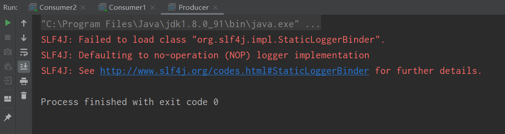
小结 交换机需要与队列进行绑定，绑定之后；一个消息可以被多个消费者都收到。
发布订阅模式与work队列模式的区别
1 2 3 1、work队列模式不用定义交换机，而发布/订阅模式需要定义交换机。 2、发布/订阅模式的生产方是面向交换机发送消息，work队列模式的生产方是面向队列发送消息(底层使用默认交换机)。 3、发布/订阅模式需要设置队列和交换机的绑定，work队列模式不需要设置，实际上work队列模式会将队列绑 定到默认的交换机 。
Routing路由模式 模式说明 路由模式特点：
1 2 3 1.队列与交换机的绑定，不能是任意绑定了，而是要指定一个RoutingKey（路由key） 2.消息的发送方在 向 Exchange发送消息时，也必须指定消息的 RoutingKey。 3.Exchange不再把消息交给每一个绑定的队列，而是根据消息的Routing Key进行判断，只有队列的Routingkey与消息的 Routing key完全一致，才会接收到消息
图解：
1 2 3 4 P：生产者，向Exchange发送消息，发送消息时，会指定一个routing key。 X：Exchange（交换机），接收生产者的消息，然后把消息递交给 与routing key完全匹配的队列 C1：消费者，其所在队列指定了需要routing key 为 error 的消息 C2：消费者，其所在队列指定了需要routing key 为 info、error、warning 的消息
代码 在编码上与 Publish/Subscribe发布与订阅模式 的区别是交换机的类型为：Direct，还有队列绑定交换机的时候需要指定routing key。
(1)生产者
创建com.itheima.rabbitmq.toutekey.RouteKeyProducer消息生产者，代码如下：
1 2 3 4 5 6 7 8 9 10 11 12 13 14 15 16 17 18 19 20 21 22 23 24 25 26 27 28 29 30 31 32 33 34 35 36 37 38 39 package com.yuefeng.routing;import com.rabbitmq.client.BuiltinExchangeType;import com.rabbitmq.client.Channel;import com.rabbitmq.client.Connection;import com.yuefeng.util.ConnectionUtil;public class Producer public static void main (String[] args) throws Exception Connection connection = ConnectionUtil.getConnection(); Channel channel = connection.createChannel(); channel.queueDeclare("direct_queue1" , true , false , false , null ); channel.queueDeclare("direct_queue2" , true , false , false , null ); channel.exchangeDeclare("direct_exchange" , BuiltinExchangeType.DIRECT); channel.queueBind("direct_queue1" , "direct_exchange" , "item.insert" ); channel.queueBind("direct_queue2" , "direct_exchange" , "item.update" ); String message1 = "hello i from direct insert" ; String message2 = "hello i from direct update" ; channel.basicPublish("direct_exchange" , "item.insert" , null , message1.getBytes()); channel.basicPublish("direct_exchange" , "item.update" , null , message2.getBytes()); channel.close(); connection.close(); } }
(2)消费者RouteKey-Insert
创建direct_queue_insert队列的消费者com.itheima.rabbitmq.toutekey.ConsumerInsert，代码如下：
1 2 3 4 5 6 7 8 9 10 11 12 13 14 15 16 17 18 19 20 21 22 23 24 25 26 27 28 29 30 31 32 33 34 35 36 37 38 39 40 41 42 43 44 45 46 47 48 49 50 51 52 53 54 55 56 57 58 59 60 package com.yuefeng.routing;import com.rabbitmq.client.*;import com.yuefeng.util.ConnectionUtil;import java.io.IOException;public class Consumer1 public static void main (String[] args) throws Exception Connection connection = ConnectionUtil.getConnection(); Channel channel = connection.createChannel(); channel.queueDeclare("direct_queue1" ,true ,false ,false ,null ); DefaultConsumer defaultConsumer = new DefaultConsumer(channel){ @Override public void handleDelivery (String consumerTag, Envelope envelope, AMQP.BasicProperties properties, byte [] body) throws IOException String routingKey = envelope.getRoutingKey(); String exchange = envelope.getExchange(); long deliveryTag = envelope.getDeliveryTag(); String message = new String(body,"UTF-8" ); System.out.println("111111111111111111111111111" ); System.out.println("routingKey:" +routingKey+",exchange:" +exchange+",deliveryTag:" +deliveryTag+",message:" +message); System.out.println("消息本身是: " +new String(body)); } }; channel.basicConsume("direct_queue1" ,true ,defaultConsumer); } }
(3)消费者-RouteKey-Update
创建direct_queue_update队列的消费者com.itheima.rabbitmq.toutekey.ConsumerUpdate，代码如下：
1 2 3 4 5 6 7 8 9 10 11 12 13 14 15 16 17 18 19 20 21 22 23 24 25 26 27 28 29 30 31 32 33 34 35 36 37 38 39 40 41 42 43 44 45 46 47 48 49 50 51 52 53 54 55 56 57 58 59 package com.yuefeng.fanout;import com.rabbitmq.client.*;import com.yuefeng.util.ConnectionUtil;import java.io.IOException;public class Consumer2 public static void main (String[] args) throws Exception Connection connection = ConnectionUtil.getConnection(); Channel channel = connection.createChannel(); channel.queueDeclare("fanout_queue2" ,true ,false ,false ,null ); DefaultConsumer defaultConsumer = new DefaultConsumer(channel){ @Override public void handleDelivery (String consumerTag, Envelope envelope, AMQP.BasicProperties properties, byte [] body) throws IOException String routingKey = envelope.getRoutingKey(); String exchange = envelope.getExchange(); long deliveryTag = envelope.getDeliveryTag(); String message = new String(body,"UTF-8" ); System.out.println("222222222222222222222222222" ); System.out.println("routingKey:" +routingKey+",exchange:" +exchange+",deliveryTag:" +deliveryTag+",message:" +message); } }; channel.basicConsume("fanout_queue2" ,true ,defaultConsumer); } }
测试 启动所有消费者，然后使用生产者发送消息；在消费者对应的控制台可以查看到生产者发送对应routing key对应队列的消息；到达按照需要接收 的效果。
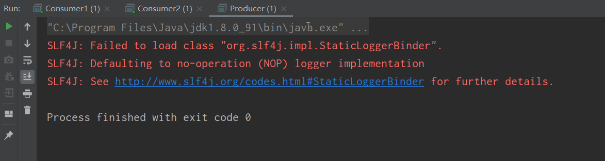
4.4.4. 小结 Routing模式要求队列在绑定交换机时要指定routing key，消息会转发到符合routing key的队列。
4.5. Topics通配符模式 4.5.1. 模式说明 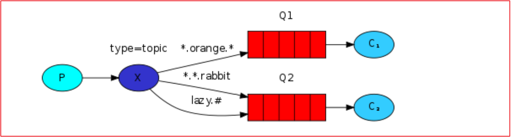
Topic类型与Direct相比，都是可以根据RoutingKey把消息路由到不同的队列。只不过Topic类型Exchange可以让队列在绑定Routing key 的时候使用通配符 ！
Routingkey 一般都是有一个或多个单词组成，多个单词之间以”.”分割，例如： item.insert
通配符规则：
#：匹配一个或多个词
*：匹配不多不少恰好1个词
举例：
item.#：能够匹配item.insert.abc 或者 item.insert
item.*：只能匹配item.insert
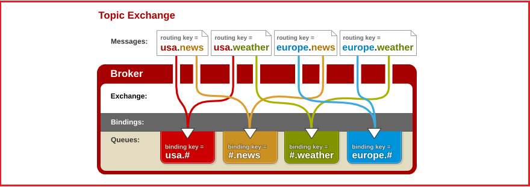
图解：
红色Queue：绑定的是usa.# ，因此凡是以 usa.开头的routing key 都会被匹配到
黄色Queue：绑定的是#.news ，因此凡是以 .news结尾的 routing key 都会被匹配
4.5.2. 代码 (1)生产者
使用topic类型的Exchange，发送消息的routing key有3种： item.insert、item.update、item.delete：
创建com.itheima.rabbitmq.topic.TopicProducer实现消息生产，代码如下：
1 2 3 4 5 6 7 8 9 10 11 12 13 14 15 16 17 18 19 20 21 22 23 24 25 26 27 28 29 30 31 32 33 34 35 36 37 38 39 40 41 42 43 package com.yuefeng.topic;import com.rabbitmq.client.BuiltinExchangeType;import com.rabbitmq.client.Channel;import com.rabbitmq.client.Connection;import com.yuefeng.util.ConnectionUtil;public class Producer public static void main (String[] args) throws Exception Connection connection = ConnectionUtil.getConnection(); Channel channel = connection.createChannel(); channel.queueDeclare("topic_queue1" , true , false , false , null ); channel.queueDeclare("topic_queue2" , true , false , false , null ); channel.exchangeDeclare("topic_exchange" , BuiltinExchangeType.TOPIC); channel.queueBind("topic_queue1" , "topic_exchange" , "item.*" ); channel.queueBind("topic_queue2" , "topic_exchange" , "order.*" ); String message1 = "hello i from 商品添加" ; String message2 = "hello i from 商品更新" ; String message3 = "hello i from 商品删除" ; String message4 = "hello i from 订单更新" ; channel.basicPublish("topic_exchange" , "item.insert" , null , message1.getBytes()); channel.basicPublish("topic_exchange" , "item.update" , null , message2.getBytes()); channel.basicPublish("topic_exchange" , "item.delete" , null , message3.getBytes()); channel.basicPublish("topic_exchange" , "order.update" , null , message4.getBytes()); channel.close(); connection.close(); } }
(2)消费者one
上面配置了路由绑定过滤的规则，如下图：
创建com.itheima.rabbitmq.topic.ConsumerOne实现对topic_queue_1队列数据的消费，代码如下：
1 2 3 4 5 6 7 8 9 10 11 12 13 14 15 16 17 18 19 20 21 22 23 24 25 26 27 28 29 30 31 32 33 34 35 36 37 38 39 40 41 42 43 44 45 46 47 48 49 50 51 52 53 54 55 56 57 58 59 60 package com.yuefeng.topic;import com.rabbitmq.client.*;import com.yuefeng.util.ConnectionUtil;import java.io.IOException;public class Consumer1 public static void main (String[] args) throws Exception Connection connection = ConnectionUtil.getConnection(); Channel channel = connection.createChannel(); channel.queueDeclare("topic_queue1" ,true ,false ,false ,null ); DefaultConsumer defaultConsumer = new DefaultConsumer(channel){ @Override public void handleDelivery (String consumerTag, Envelope envelope, AMQP.BasicProperties properties, byte [] body) throws IOException String routingKey = envelope.getRoutingKey(); String exchange = envelope.getExchange(); long deliveryTag = envelope.getDeliveryTag(); String message = new String(body,"UTF-8" ); System.out.println("111111111111111111111111111" ); System.out.println("routingKey:" +routingKey+",exchange:" +exchange+",deliveryTag:" +deliveryTag+",message:" +message); System.out.println("消息本身是: " +new String(body)); } }; channel.basicConsume("topic_queue1" ,true ,defaultConsumer); } }
(3)消费者Two
接收所有类型的消息：新增商品，更新商品和删除商品。
创建com.itheima.rabbitmq.topic.ConsumerTwo实现消息消费，代码如下：
1 2 3 4 5 6 7 8 9 10 11 12 13 14 15 16 17 18 19 20 21 22 23 24 25 26 27 28 29 30 31 32 33 34 35 36 37 38 39 40 41 42 43 44 45 46 47 48 49 50 51 52 53 54 55 56 57 58 59 60 package com.yuefeng.topic;import com.rabbitmq.client.*;import com.yuefeng.util.ConnectionUtil;import java.io.IOException;public class Consumer2 public static void main (String[] args) throws Exception Connection connection = ConnectionUtil.getConnection(); Channel channel = connection.createChannel(); channel.queueDeclare("topic_queue2" ,true ,false ,false ,null ); DefaultConsumer defaultConsumer = new DefaultConsumer(channel){ @Override public void handleDelivery (String consumerTag, Envelope envelope, AMQP.BasicProperties properties, byte [] body) throws IOException String routingKey = envelope.getRoutingKey(); String exchange = envelope.getExchange(); long deliveryTag = envelope.getDeliveryTag(); String message = new String(body,"UTF-8" ); System.out.println("111111111111111111111111111" ); System.out.println("routingKey:" +routingKey+",exchange:" +exchange+",deliveryTag:" +deliveryTag+",message:" +message); System.out.println("消息本身是: " +new String(body)); } }; channel.basicConsume("topic_queue2" ,true ,defaultConsumer); } }
4.5.3. 测试 启动所有消费者，然后使用生产者发送消息；在消费者对应的控制台可以查看到生产者发送对应routing key对应队列的消息；到达按照需要接收 的效果；并且这些routing key可以使用通配符。
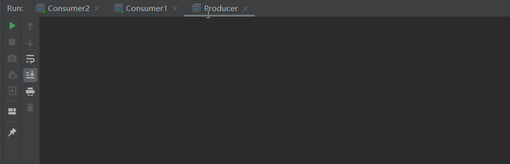
4.5.4. 小结 Topic主题模式可以实现 Publish/Subscribe发布与订阅模式 和 Routing路由模式 的功能；只是Topic在配置routing key 的时候可以使用通配符，显得更加灵活。
4.6. 模式总结 RabbitMQ工作模式：1、简单模式 HelloWorld
2、工作队列模式 Work Queue
3、发布订阅模式 Publish/subscribe
4、路由模式 Routing
5、通配符模式 Topic
5.Spring Boot整合RabbitMQ 5.1 简介 在Spring项目中，可以使用Spring-Rabbit去操作RabbitMQhttps://github.com/spring-projects/spring-amqp
尤其是在spring boot项目中只需要引入对应的amqp启动器依赖即可，方便的使用RabbitTemplate发送消息，使用注解接收消息。
一般在开发过程中 ：
生产者工程：
application.yml文件配置RabbitMQ相关信息；
在生产者工程中编写配置类，用于创建交换机和队列，并进行绑定
注入RabbitTemplate对象，通过RabbitTemplate对象发送消息到交换机
消费者工程：
application.yml文件配置RabbitMQ相关信息
创建消息处理类，用于接收队列中的消息并进行处理
5.2快速入门 1.引入依赖
1 2 3 4 5 6 7 8 9 10 11 12 13 14 15 16 17 18 19 20 21 22 23 24 25 26 27 28 29 30 <?xml version="1.0" encoding="UTF-8"?> <project xmlns ="http://maven.apache.org/POM/4.0.0" xmlns:xsi ="http://www.w3.org/2001/XMLSchema-instance" xsi:schemaLocation ="http://maven.apache.org/POM/4.0.0 http://maven.apache.org/xsd/maven-4.0.0.xsd" > <modelVersion > 4.0.0</modelVersion > <groupId > org.example</groupId > <artifactId > rabbitMq_springboot</artifactId > <version > 1.0-SNAPSHOT</version > <parent > <groupId > org.springframework.boot</groupId > <artifactId > spring-boot-starter-parent</artifactId > <version > 2.1.4.RELEASE</version > </parent > <dependencies > <dependency > <groupId > org.springframework.boot</groupId > <artifactId > spring-boot-starter-amqp</artifactId > </dependency > <dependency > <groupId > org.springframework.boot</groupId > <artifactId > spring-boot-starter-test</artifactId > </dependency > </dependencies > </project >
1 2 3 4 5 6 7 8 9 10 11 12 13 14 15 16 17 18 19 20 21 22 23 24 25 26 27 28 29 30 <?xml version="1.0" encoding="UTF-8"?> <project xmlns ="http://maven.apache.org/POM/4.0.0" xmlns:xsi ="http://www.w3.org/2001/XMLSchema-instance" xsi:schemaLocation ="http://maven.apache.org/POM/4.0.0 http://maven.apache.org/xsd/maven-4.0.0.xsd" > <modelVersion > 4.0.0</modelVersion > <groupId > org.example</groupId > <artifactId > 5_22rabbitMq_springboot</artifactId > <version > 1.0-SNAPSHOT</version > <parent > <groupId > org.springframework.boot</groupId > <artifactId > spring-boot-starter-parent</artifactId > <version > 2.1.4.RELEASE</version > </parent > <dependencies > <dependency > <groupId > org.springframework.boot</groupId > <artifactId > spring-boot-starter-amqp</artifactId > </dependency > <dependency > <groupId > org.springframework.boot</groupId > <artifactId > spring-boot-starter-test</artifactId > </dependency > </dependencies > </project >
2.创建启动类
1 2 3 4 5 6 7 8 9 10 11 12 13 14 15 16 17 18 19 20 21 22 23 24 25 26 @SpringBootApplication public class MyRabbitApplication public static void main (String[] args) SpringApplication.run(MyRabbitApplication.class, args); } @Bean public TopicExchange topicExchange () return new TopicExchange("topic_exchange_springboot111" ); } @Bean public Queue createqueue () return new Queue("topic_queue1_springboot111" ); } @Bean public Binding createBinding () return BindingBuilder.bind(createqueue()).to(topicExchange()).with("item.*" ); } }
3.配置文件
1 2 3 4 5 6 7 spring: rabbitmq: host: localhost port: 5672 username: guest password: guest virtual-host: /
4.编写测试类
1 2 3 4 5 6 7 8 9 10 11 12 13 14 15 16 17 18 19 20 21 22 23 24 25 26 27 28 29 30 31 32 33 package com.yuefeng;import org.junit.Test;import org.junit.runner.RunWith;import org.springframework.amqp.rabbit.core.RabbitTemplate;import org.springframework.beans.factory.annotation.Autowired;import org.springframework.boot.test.context.SpringBootTest;import org.springframework.test.context.junit4.SpringRunner;@SpringBootTest @RunWith(SpringRunner.class) public class MyRabbitTest @Autowired private RabbitTemplate rabbitTemplate; @Test public void sendmessage () rabbitTemplate.convertAndSend("topic_exchange_springboot111" , "item.insert" , "月峰你好" ); try { Thread.sleep(100000 ); } catch (InterruptedException e) { e.printStackTrace(); } } }
5.编写Listener
1 2 3 4 5 6 7 8 9 10 11 12 13 14 15 16 17 package com.yuefeng.listener;import org.springframework.amqp.rabbit.annotation.RabbitListener;import org.springframework.stereotype.Component;@Component public class TopicListener @RabbitListener(queues = "topic_queue1_springboot111") public void receiveMessage (String msg) System.out.println(msg); } }